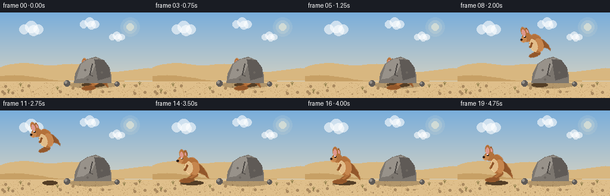
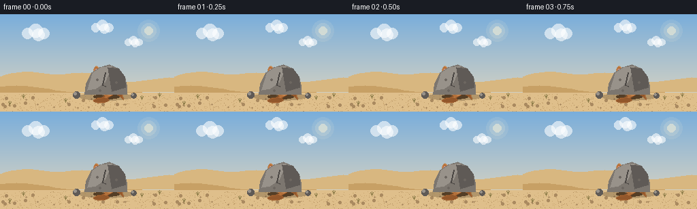

CODING AGENTS AS PIXEL WORLD MODELS
traex/Seed-2.1-Pro-0915 · dynamic_spatial_relationship_0035
点击播放 · 原生 RGB 像素
逐轮保存的候选
回放视频、检查图与代码变化。
每份候选均可单独播放。实际图片检查记录在下方工具轨迹中。
候选 01播放与检查图
点击播放 · 原生 RGB 像素


展开代码变化
--- 上一保存版本
+++ 本次保存版本
@@ -0,0 +1,300 @@
+"""Procedural t2v clip: a kangaroo hides behind a rock, then hops to its left.
+
+20 RGB frames, 256x144 @ 4fps. Pure PIL/numpy, deterministic.
+"""
+import math
+
+import numpy as np
+from PIL import Image, ImageDraw
+
+import artifact_io
+
+W, H, N, FPS = 256, 144, 20, 4.0
+HORIZON = 100
+GROUND_Y = 120 # feet / rock base line
+ROCK = (124, 186, 74) # left x, right x, top y
+START_X, END_X = 156, 66
+JUMP_H = 52
+
+rng = np.random.default_rng(21)
+
+# Palette
+SKY_TOP = (122, 174, 219)
+SKY_HOR = (229, 216, 190)
+DUNE_FAR = (216, 183, 128)
+DUNE_NEAR = (199, 160, 101)
+SAND = (223, 191, 139)
+SAND_DARK = (201, 166, 112)
+FUR = (179, 113, 59)
+FUR_DARK = (146, 87, 43)
+FUR_LIGHT = (198, 134, 78)
+BELLY = (226, 188, 137)
+INK = (43, 30, 23)
+EAR_INNER = (221, 151, 141)
+ROCK_MAIN = (124, 118, 111)
+ROCK_LIGHT = (152, 146, 138)
+ROCK_DARK = (95, 90, 86)
+
+
+def lerp(a, b, t):
+ return a + (b - a) * t
+
+
+def smoothstep(t):
+ return t * t * (3 - 2 * t)
+
+
+def quad(p0, p1, p2, s):
+ a = (1 - s) ** 2
+ b = 2 * (1 - s) * s
+ c = s * s
+ return (a * p0[0] + b * p1[0] + c * p2[0],
+ a * p0[1] + b * p1[1] + c * p2[1])
+
+
+def build_background():
+ img = Image.new("RGB", (W, H))
+ px = img.load()
+ for y in range(H):
+ t = y / (H - 1)
+ col = tuple(int(lerp(SKY_TOP[i], SKY_HOR[i], t)) for i in range(3))
+ for x in range(W):
+ px[x, y] = col
+ d = ImageDraw.Draw(img, "RGBA")
+
+ # Soft sun, upper right
+ sx, sy = 218, 24
+ for r, a in ((16, 26), (11, 40), (6, 120)):
+ d.ellipse((sx - r, sy - r, sx + r, sy + r),
+ fill=(255, 244, 214, a))
+
+ # Clouds: clusters of soft ellipses
+ for cx, cy, s in ((52, 26, 1.0), (150, 18, 0.8), (196, 40, 0.65)):
+ for ox, oy, rr in ((-12, 2, 8), (0, -2, 10), (12, 2, 8), (4, 4, 9)):
+ r = rr * s
+ d.ellipse((cx + ox * s - r, cy + oy * s - r,
+ cx + ox * s + r, cy + oy * s + r),
+ fill=(255, 255, 255, 150))
+
+ # Layered desert dunes
+ far = [(0, HORIZON)]
+ for x in range(0, W + 8, 8):
+ y = HORIZON - 8 - 6 * math.sin(x / 46.0) - 3 * math.sin(x / 17.0)
+ far.append((x, y))
+ far += [(W, HORIZON), (W, HORIZON + 14), (0, HORIZON + 14)]
+ d.polygon(far, fill=DUNE_FAR)
+
+ near = [(0, HORIZON + 10)]
+ for x in range(0, W + 8, 8):
+ y = HORIZON + 12 - 5 * math.sin(x / 61.0 + 1.7) - 2 * math.sin(x / 23.0)
+ near.append((x, y))
+ near += [(W, H), (0, H)]
+ d.polygon(near, fill=DUNE_NEAR)
+
+ # Sandy ground
+ d.rectangle((0, HORIZON + 16, W, H), fill=SAND)
+
+ # Deterministic ground texture: speckles, pebbles, grass tufts
+ for _ in range(420):
+ x = int(rng.integers(0, W))
+ y = int(rng.integers(HORIZON + 18, H))
+ r = rng.random()
+ col = SAND_DARK if r < 0.7 else (176, 140, 92)
+ img.putpixel((x, y), col)
+ for _ in range(26):
+ x = int(rng.integers(4, W - 4))
+ y = int(rng.integers(HORIZON + 22, H - 3))
+ rr = int(rng.integers(1, 3))
+ d.ellipse((x - rr, y - rr, x + rr, y + rr), fill=(170, 138, 96))
+ for gx, gy in ((34, 124), (96, 130), (208, 126), (234, 122), (14, 134)):
+ for k in range(3):
+ dx = (k - 1) * 2
+ d.line((gx, gy, gx + dx, gy - 5 - (k == 1)), fill=(143, 126, 74))
+
+ # Rock contact shadow (baked behind every actor)
+ d.ellipse((ROCK[0] - 8, GROUND_Y - 4, ROCK[1] + 8, GROUND_Y + 7),
+ fill=(96, 74, 48, 90))
+ return img
+
+
+def build_rock_foreground():
+ """Static rock layer, composited above the kangaroo for occlusion."""
+ layer = Image.new("RGBA", (W, H), (0, 0, 0, 0))
+ d = ImageDraw.Draw(layer)
+ l, r, top = ROCK
+ outline = [(l, GROUND_Y - 2), (l + 2, GROUND_Y - 18), (l + 10, top + 12),
+ (l + 22, top + 4), (l + 36, top), (l + 50, top + 6),
+ (r - 3, top + 18), (r, GROUND_Y - 14), (r, GROUND_Y - 2)]
+ d.polygon(outline, fill=ROCK_MAIN)
+ # Light facet (lit from upper left) and dark facet
+ d.polygon([(l + 4, GROUND_Y - 8), (l + 12, top + 12), (l + 24, top + 4),
+ (l + 40, top + 2), (l + 30, top + 26), (l + 16, GROUND_Y - 10)],
+ fill=ROCK_LIGHT)
+ d.polygon([(l + 34, top + 4), (l + 50, top + 6), (r - 3, top + 18),
+ (r - 2, GROUND_Y - 12), (l + 40, GROUND_Y - 6)],
+ fill=ROCK_DARK)
+ # Crack and a few specks
+ d.line((l + 30, top + 12, l + 26, top + 30, l + 31, GROUND_Y - 14),
+ fill=(74, 70, 67), width=2)
+ for px, py in ((l + 18, top + 22), (l + 46, top + 26), (l + 22, GROUND_Y - 8)):
+ d.ellipse((px - 1, py - 1, px + 2, py + 2), fill=(108, 102, 96))
+ # Small companion stones
+ for cx, cy, rr in ((l - 12, GROUND_Y - 1, 5), (r + 10, GROUND_Y, 4)):
+ d.ellipse((cx - rr, cy - rr, cx + rr, cy + rr), fill=ROCK_DARK)
+ d.ellipse((cx - rr + 1, cy - rr + 1, cx, cy), fill=ROCK_LIGHT)
+ return layer
+
+
+S = 128 # sprite canvas
+AX, AY = 60, 106 # anchor: feet position inside sprite
+
+
+def build_kangaroo(tuck, tilt, sx_scale, sy_scale, ear_twitch):
+ """Side-view kangaroo facing left. Anchor (0,0) is the feet on the ground."""
+ spr = Image.new("RGBA", (S, S), (0, 0, 0, 0))
+ d = ImageDraw.Draw(spr)
+
+ def P(lx, ly):
+ return (AX + lx * sx_scale, AY + ly * sy_scale)
+
+ def ell(center, rx, ry, fill):
+ cx, cy = P(*center)
+ d.ellipse((cx - rx * sx_scale, cy - ry * sy_scale,
+ cx + rx * sx_scale, cy + ry * sy_scale), fill=fill)
+
+ def line(points, width, fill):
+ d.line([P(*p) for p in points], width=max(1, int(width * (sx_scale + sy_scale) / 2)),
+ fill=fill, joint="curve")
+
+ def poly(points, fill):
+ d.polygon([P(*p) for p in points], fill=fill)
+
+ # --- Hind leg (hip -> knee -> ankle -> long foot)
+ hip = (3, -22)
+ knee = (lerp(9, 7, tuck), lerp(-11, -21, tuck))
+ ankle = (lerp(-5, -3, tuck), lerp(-3, -15, tuck))
+ heel = (1, lerp(-2, -12, tuck))
+ toe = (lerp(-17, -11, tuck), lerp(-1, -13, tuck))
+ poly([hip, (hip[0] + 5, hip[1] + 2), knee, (knee[0] - 3, knee[1] + 3)], FUR_DARK)
+ line([hip, knee, ankle], width=7, fill=FUR_DARK)
+ line([(hip[0] - 1, hip[1] - 1), (knee[0] - 1, knee[1]), ankle],
+ width=4, fill=FUR)
+ # Foot: elongated, resting forward (toward the left)
+ fx0, fy0 = P(*heel)
+ fx1, fy1 = P(*toe)
+ foot_w = 3.2 * (sx_scale + sy_scale) / 2
+ d.ellipse((min(fx0, fx1) - foot_w, min(fy0, fy1) - foot_w,
+ max(fx0, fx1) + foot_w, max(fy0, fy1) + foot_w), fill=FUR_DARK)
+
+ # --- Tail: tapering quadratic curve sweeping back to the right
+ base = (10, -24)
+ ctrl = (lerp(22, 18, tuck), lerp(-16, -22, tuck))
+ tip = (lerp(27, 20, tuck), lerp(-2, -11, tuck))
+ left_pts, right_pts = [], []
+ for i in range(13):
+ s = i / 12
+ qx, qy = quad(base, ctrl, tip, s)
+ qx2, qy2 = quad(base, ctrl, tip, min(1, s + 0.02))
+ dx, dy = qx2 - qx, qy2 - qy
+ norm = math.hypot(dx, dy) or 1
+ nx, ny = -dy / norm, dx / norm
+ w = 7.5 * (1 - s) ** 1.3 + 0.8
+ left_pts.append((qx + nx * w, qy + ny * w))
+ right_pts.append((qx - nx * w, qy - ny * w))
+ poly(left_pts + right_pts[::-1], FUR_DARK)
+
+ # --- Body
+ ell((2, -28), 11, 16, FUR)
+ ell((6, -24), 7, 11, FUR_LIGHT) # sunlit haunch
+ ell((-3, -26), 6, 11, BELLY) # cream belly/chest
+
+ # --- Small forearm
+ arm_end = (-9, lerp(-22, -26, tuck))
+ line([(-4, -31), arm_end], width=3, fill=FUR_DARK)
+ ell(arm_end, 1.8, 1.8, FUR_DARK)
+
+ # --- Far ear (behind head)
+ ell((-6, -51), 2.4, 7, FUR_DARK)
+ ell((-6, -50), 1.1, 4.5, EAR_INNER)
+
+ # --- Head and snout
+ ell((-10, -42), 8, 7.5, FUR)
+ ell((-16, -40), 5, 4, FUR_LIGHT) # muzzle
+ ell((-19.2, -40.6), 1.7, 1.5, INK) # nose
+ ell((-12, -44.2), 1.6, 1.7, INK) # eye
+ ell((-12.5, -44.8), 0.6, 0.6, (255, 255, 255))
+
+ # --- Near ear, with occasional twitch
+ tw = ear_twitch * 3
+ ear_top = (-13 - tw, -58)
+ ear_bot = (-10, -48)
+ ex0, ey0 = P(*ear_bot)
+ ex1, ey1 = P(*ear_top)
+ d.ellipse((min(ex0, ex1) - 2.4 * sx_scale, min(ey0, ey1) - 2.4 * sy_scale,
+ max(ex0, ex1) + 2.4 * sx_scale, max(ey0, ey1) + 2.4 * sy_scale),
+ fill=FUR)
+ ix0, iy0 = P(ear_bot[0] - 0.4, ear_bot[1] + 1.5)
+ ix1, iy1 = P(ear_top[0] - 0.4, ear_top[1] + 2.5)
+ d.ellipse((min(ix0, ix1) - 1.0 * sx_scale, min(iy0, iy1) - 1.0 * sy_scale,
+ max(ix0, ix1) + 1.0 * sx_scale, max(iy0, iy1) + 1.0 * sy_scale),
+ fill=EAR_INNER)
+
+ if tilt:
+ spr = spr.rotate(tilt, center=(AX, AY), resample=Image.Resampling.BICUBIC)
+ return spr
+
+
+def kangaroo_pose(frame):
+ """Return (x, feet_y, tuck, tilt, sx, sy, ear_twitch) for each frame."""
+ twitch = 1.0 if frame in (4, 17) else 0.0
+ if frame <= 5: # hidden, crouched behind rock
+ bob = math.sin(frame / 6 * 2 * math.pi) * 1.0
+ return START_X, GROUND_Y + 12 + bob, 0.35, 3, 1.02, 0.92, twitch
+ if frame == 6: # wind-up crouch, still hidden
+ return START_X, GROUND_Y + 10, 0.45, 6, 1.07, 0.9, 0.0
+ if frame <= 13: # flight + landing
+ u = (frame - 6) / 7
+ x = lerp(START_X, END_X, smoothstep(u))
+ # Rise out from behind the rock, arc across, settle onto the ground.
+ feet = lerp(GROUND_Y + 12, GROUND_Y, u) - (JUMP_H + 12) * math.sin(math.pi * u)
+ tuck = math.sin(math.pi * u) * 0.95
+ if u < 0.18:
+ tuck = max(tuck, 0.35) # takeoff extension
+ tilt = lerp(10, 20, math.sin(math.pi * u))
+ stretch = 1.06 if u < 0.2 or u > 0.85 else 1.0
+ return x, feet, tuck, tilt, stretch, 2 - stretch, 0.0
+ if frame == 14: # landing squash
+ return END_X, GROUND_Y, 0.15, 5, 1.08, 0.92, 0.0
+ bob = math.sin((frame - 14) / 6 * 2 * math.pi) * 1.4
+ return END_X, GROUND_Y + bob, 0.05, 4, 1.0, 1.0, twitch
+
+
+def main():
+ background = build_background()
+ rock_fg = build_rock_foreground()
+ frames = []
+ for f in range(N):
+ x, feet, tuck, tilt, sx, sy, twitch = kangaroo_pose(f)
+ canvas = background.copy().convert("RGBA")
+
+ # Ground shadow shrinks and fades as the kangaroo rises
+ lift = max(0, GROUND_Y - feet)
+ lift_r = min(1.0, lift / JUMP_H)
+ sh_alpha = int(95 * (1 - 0.65 * lift_r))
+ sh_rx = 19 - 7 * lift_r
+ sd = ImageDraw.Draw(canvas, "RGBA")
+ sd.ellipse((x - sh_rx, GROUND_Y - 2, x + sh_rx, GROUND_Y + 5),
+ fill=(84, 62, 38, sh_alpha))
+
+ roo = build_kangaroo(tuck, tilt, sx, sy, twitch)
+ canvas.alpha_composite(roo, (int(x - AX), int(feet - AY)))
+ canvas.alpha_composite(rock_fg) # rock occludes hidden roo
+ frames.append(np.asarray(canvas.convert("RGB"), dtype=np.uint8))
+
+ frames = np.stack(frames)
+ artifact_io.save(frames, ".")
+ print(f"saved {frames.shape} frames")
+
+
+if __name__ == "__main__":
+ main()
可观测工具轨迹
实际执行的命令与返回图片。
命令 1exit 0
/bin/bash -lc 'ls -la; echo "---"; cat prompt.txt; echo "---"; cat GENERATION_RULES.md; echo "---"; cat task_spec.json'
命令 2exit 0
/bin/bash -lc 'cat artifact_io.py; echo "---"; cat player_template.html'
命令 3exit 1
/bin/bash -lc 'cd . && python generate.py && ls -la && ls frames | head -25'
命令 4exit 0
/bin/bash -lc 'cd . && python generate.py && ls -la'
保存候选 1 份；完成命令 4 次；可验证图片返回 0 张。原始 API 响应与完整日志保留在本地。